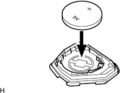
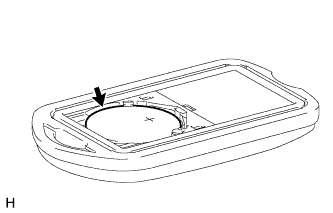

ПЕРЕДАТЧИК СИСТЕМЫ УПРАВЛЕНИЯ ЗАМКАМИ ДВЕРЕЙ (для моделей без системы посадки и запуска) > УСТАНОВКА |
| 1. УСТАНОВИТЕ БАТАРЕЮ ПЕРЕДАТЧИКА (кроме моделей раздельного типа) |
|  |
Установите батарею (литиевую батарею: CR2016) положительным (+) полюсом вверх, как показано на рисунке.
Установите крышку.
| 2. УСТАНОВИТЕ ПЕРЕДАТЧИК СИСТЕМЫ УПРАВЛЕНИЯ ЗАМКАМИ ДВЕРЕЙ (кроме моделей раздельного типа) |
Установите передатчик системы дистанционной блокировки дверей.
| 3. УСТАНОВИТЕ КРЫШКУ КОРПУСА ПЕРЕДАТЧИКА (кроме моделей раздельного типа) |
Установите крышку корпуса передатчика на корпус передатчика.
Убедитесь, что светодиод передатчика загорается 3 раза при трехкратном нажатии каждого выключателя.
| 4. УСТАНОВИТЕ БАТАРЕЮ ПЕРЕДАТЧИКА (для раздельного типа) |
|  |
Установите новую батарею (литиевую батарею: CR2032) положительным (+) полюсом вверх, как показано на рисунке.
Установите крышку корпуса передатчика.
Нажмите на один из выключателей передатчика и убедитесь, что светодиод загорается.